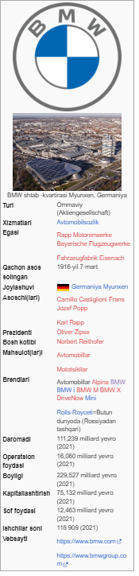
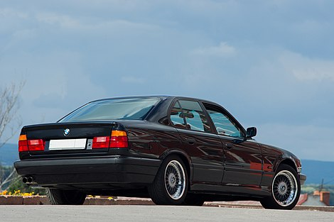
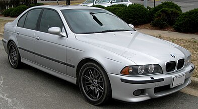

2006 -jıldan 2015-jılǵa shekem Norbert Raytxofer,
2015-jıl may ayınan Harald Kruger,
2019 -jıl 18-iyuldan Oliver Sipse tayınlanǵan hám biylep atır

BMW E34
Islep shıǵarıw zavodı Karl Fridrix Rapp tárepinen 1916 -jıl oktyabr ayında islengen biraq, BMW 1917-jıl 20 -iyulda rásmiy dizimnen ótken. Lekin daslep Bayerische Flugzeug-Werke samalyotlari ushın dvigatelleri islep shıǵarǵan. Nemis samolyot óndiriwshisi Gustav Otto tárepinenFlugmaschinenfabrik qasında BMW jaylasqanlıǵı sebepli onıń dvigetillari saylanǵan.

BMW M5 E39